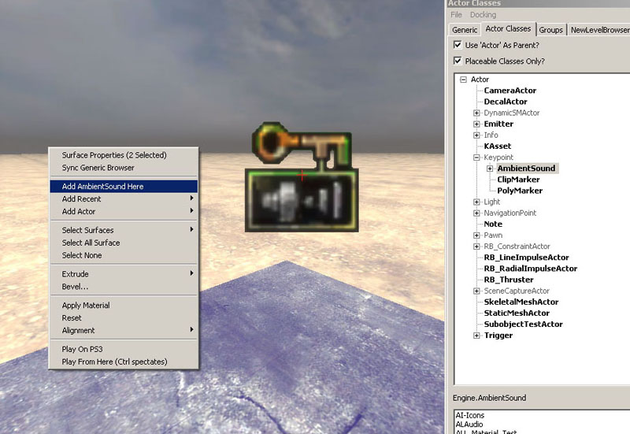
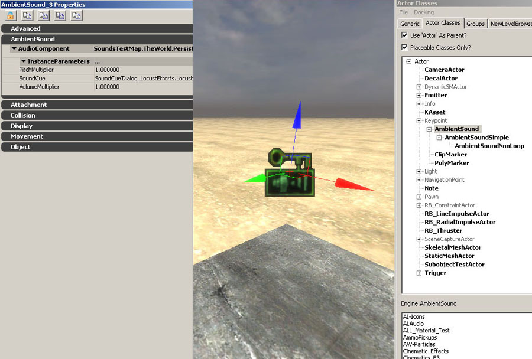
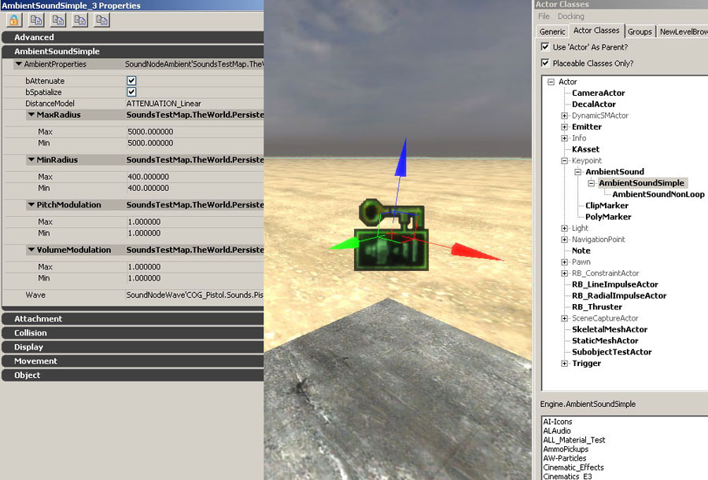

UDN
Search public documentation:
UsingSoundActorsJP
English Translation
中国翻译
한국어
Interested in the Unreal Engine?
Visit the Unreal Technology site.
Looking for jobs and company info?
Check out the Epic games site.
Questions about support via UDN?
Contact the UDN Staff
中国翻译
한국어
Interested in the Unreal Engine?
Visit the Unreal Technology site.
Looking for jobs and company info?
Check out the Epic games site.
Questions about support via UDN?
Contact the UDN Staff
サウンド アクタ
ドキュメントの概要： レベル内で使用できるアンビエント サウンド アクタの様々なタイプを説明します。 ドキュメントの変更ログ： Mike Larson 作成(mike.larson@epicgames.com)AmbientSound アクタ
AmbientSoundアクタはSoundCue (サウンドキュー) をトリガするためにマップ内に配置されます。Actor Classes\Keypoint\AmbientSound が汎用ブラウザでハイライトされていれば、これらのアクタは、マップ上で実質上どこにでも追加されることができます。追加するには、任意のブラウザ ウィンドウの追加したい場所でマウスを右クリックし、[Add AmbientSound Here] (AmbientSoundをここに追加) を選択します。
このアクタは主に、アンビエントループサウンドをトリガするために使用されますが、非ループサウンドをトリガすることもできます。リスナーがSoundCueエディタで定義された半径に入ると、アクタは一度だけサウンドをトリガします。ループノードが使用されている場合、その半径内でサウンドが繰り返し再生され、ソースキューで定義されたすべてのプロパティに応答します。ループノードが利用されていない場合、リスナーが半径に入ると、オーディオファイルが一度のみトリガされます。
このアクタにおいて制御可能なパラメータはピッチとボリュームのみです。SoundCue内で半径が定義されている必要があります。エディタ内では半径は視覚的に表示されません。複雑なサウンドを作成するために半径コントロール\ビジビリティーよりも、SoundCueエディタの柔軟性の方が望ましい場合は、このアクタを使用します。異なる半径設定を使用し、複数の位置で同じキューをトリガしたい場合、各インスタンスについてキューを複製する必要があります。AmbientSoundSimple アクタ
AmbientSoundSimpleアクタの機能は、AmbientSound と類似しています。ただし、AmbientSoundSimple アクタは、SoundCue をトリガする代わりに、オーディオファイルを直接トリガします。このアクタは、旧UnrealエンジンのAmbientSoundアクタに多くの点で近いものです。
このアクタでは、アクタ別に 'Attenuation'、'Spatialization'、'Radii'、'Modulation' (減衰、空間化、半径、変調) を制御できます。相対ボリュームとピッチ調整は、[VolumeModulation] (ボリューム変調) と [PitchModulation] (ピッチ変調) を用いて実現します。最小・最大半径は、球としてエディタ内でグラフィック表示され、視覚的に確認することができます。また、赤・緑・青のアクタ矢印をクリックしてドラッグしてリアルタイムで調整できます。AmbientSoundNonLoop アクタ
AmbientSoundNonLoop アクタは、特定の半径内でノンループ サウンドをランダムにトリガするために、マップ内に配置されます。リスナーがその半径にはいると、リスナーが半径を出るまで、アクタ内で定義された通りに、サウンドをトリガし続けます。AmbientSoundSimpleと同様、このアクタはオーディオファイルを直接トリガします。
- 'Delay Time' (遅延時間) は、トリガとトリガの間の最小および最大消音時間を秒単位で制御します。オーディオファイルがトリガされるたびに、指定された範囲内で遅延時間がランダムに選択されます。
- 全体の Actor Volume + Pitch を定義するために 'VolumeModulation' + 'PitchModulation' が使用されます。
- 'SoundSlots' (サウンドスロット) タブの右側にある小さい緑のアイコンをクリックすると、各Wavファイル別に SoundSlots が追加されます。各サウンドスロットには、スロット別のボリューム、ピッチ、そしてウェイトプロパティが含まれます。ウェイトでは、そのSoundSlotsがトリガされる確率(他のSoundSlotsに対して)を指定します。
- アクタの一番下に位置する 'Wave' スロットは無視して、使用しないでください。
- 最小・最大半径は、球としてエディタ内でグラフィック表示され、視覚的に確認することができます。また、赤・緑・青のアクタ矢印をクリックしてドラッグしてリアルタイムで調整できます。
 マップ内ですべてのAmbientSoundSimple + AmbientSoundNonLoop アクタが選択された状態。
マップ内ですべてのAmbientSoundSimple + AmbientSoundNonLoop アクタが選択された状態。